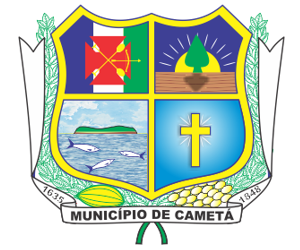
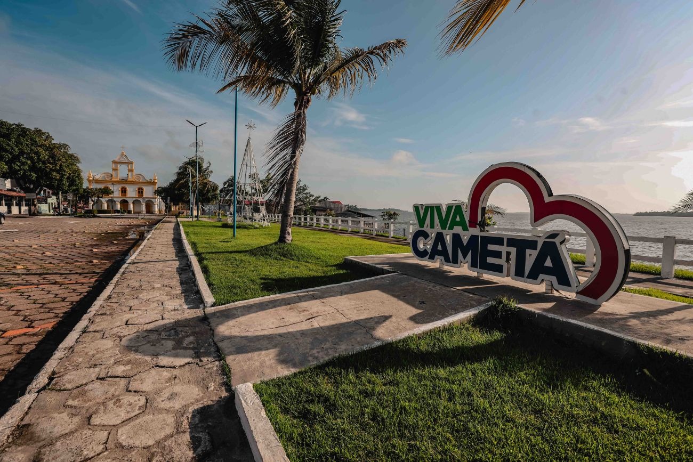
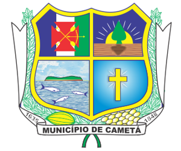
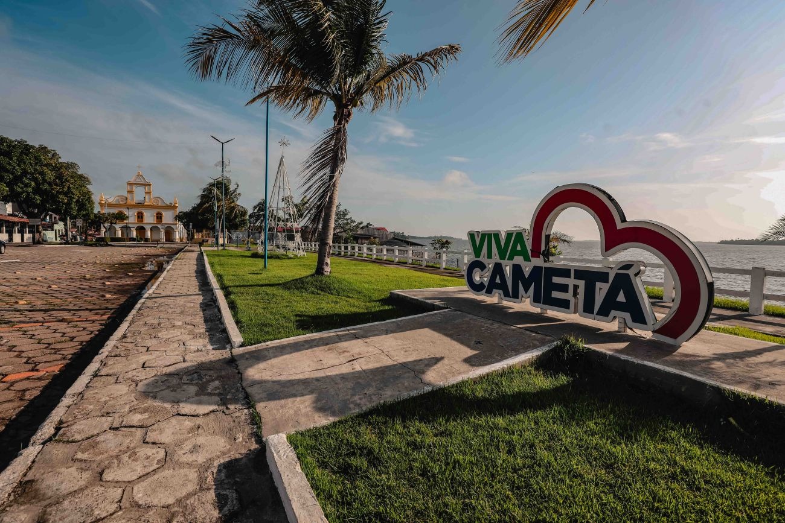

História de Cametá
No ano de 1617, Frei Cristóvão de São José, Frei Manuel da Piedade e Frei Cosme de São Damião, religiosos franciscanos, sobem o rio Tocantins desembarcando numa margem de terra à esquerda do rio. Firma-se então o primeiro contato entre a “civilização Cristã” e os índios Camutás.
O trabalho de evangelização, desenvolvido por Frei Cristóvão de São José, motivou a progressiva transferência do antigo aldeamento dos Camutás para o local onde anteriormente os religiosos haviam construído uma ermida (pequena capela) e, a partir daí, em meados do ano de 1620, tal povoamento passou a adquirir dinâmica social, populacional e econômica, configurando um núcleo populacional que passou a ser conhecido como Camutá-tapera. Em 1624, conforme narram os Anais do Arquivo Público do Pará (1965), o superior da Ordem dos Capuchos de Santo Antônio, Frei Cristovão de Lisboa visita, juntamente com os Freis Sebastião de Coimbra e Domingos de São José e os padres João da Silva e Manoel de Pina, a povoação dos Camutás.
Eles ficaram emocionados com a visão aprazível e progressista do lugar, com arruamento bem disposto, estaleiros navais pequenos mas em pleno funcionamento e com o belo trabalho de “conquista de almas” feito por Frei Cristovão de São José e seus irmãos junto à tribo dos Camutás.
No ano de 1635, foi outorgado a Feliciano Coelho de Carvalho, por carta de doação, a sesmaria, na aérea territorial, dentro da qual se localizava Camutá, passando a ser batizada essa extensão de terras com o nome de Vila Viçosa de Santa Cruz de Camutá, sob a invocação de São João Batista. Já no ano de 1637, mediante Carta Régia, datada de 26 de outubro, aconteceu a demarcação da extensão geográfica que, com o nome de Capitania de Feliciano Coelho de Carvalho, passou a ser reconhecida. De Cametá, segundo historiadores, também no ano 1637, a expedição de Pedro Teixeira, partiu da Vila Viçosa, para realizar a conquista do Amazonas. Em 1643, os capuchinhos de Santo Antônio foram substituídos pelos frades Carmelitas e posteriormente, pelos Jesuítas. De acordo com as fontes históricas, no ano de 1754, Francisco Albuquerque Coelho de Carvalho, descendente do primeiro donatário, cedeu, por uma pensão anual de três mil cruzados, seus direitos sobre a capitania de Camutá e, por este ano, a donatária ficou incorporada aos domínios da Coroa, passando a gozar das prerrogativas de Vila.
Em 1702, verificou-se a necessidade de mudança da Vila do local onde foi erguida inicialmente para onde hoje está a Cidade, devido a ribanceira da Vila Viçosa desmoronar ano após anos, pela ação das chuvas e mares, vindo a comprometer seriamente a área vital do povoado e todos os moradores.
A mudança aconteceu em 1702, mas somente em 20 de novembro de 1713 a Câmara Municipal tomou posse do novo patrimônio territorial, instalando oficialmente.
Na sua história como município, em 1713, Cametá foi reconhecida na categoria de Vila e por evidência disto foi convertida em Município, só que não existe documentos que comprovem a sua proclamação nesta data. Já em 30 de abril de 1841, foi promulgada a Lei nº 87, que concedeu a Cametá a categoria de comarca e sete anos depois, através da resolução nº145, de 21 de outubro de 1848, lhe foi outorgado o reconhecimento como cidade.
 
